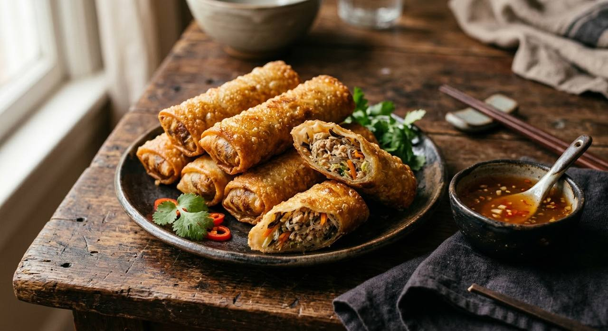

Glass noodles, minced pork and cabbage in a white-soy filling, rolled tight in thin pastry and fried until the wrapper blisters — dipped in plum sauce and gone in two bites.

ปอเปี๊ยะ came to Thailand with the Chinese traders, and the Thai kitchen kept the name and made the roll its own: the wrapper thin and blistered, the filling soft with glass noodles, the crunch the entire point. They're the standard first course of Thai restaurant menus — and the dish that separates careful cooks from the ones scraping exploded rolls out of the fryer.
The technique is everything. The filling must be stir-fried dry and cooled completely before wrapping — a wet or warm filling steams the wrapper from inside and bursts it in the oil. The wrap is folded corner-over-corner and rolled tight, and the published recipes seal the last corner with beaten egg, the specific insurance the sources name for a roll that stays closed. Roll them just before frying; the filling can be made ahead, the rolls cannot.
The dip is the third character. The sources send the rolls out with น้ำจิ้มบ๊วย — plum sauce, or three-flavour sauce, or sweet chilli. Plum is the classic: sweet-sour, dark, and exactly the right cut against the fried wrapper. The vegetarian filling is just as published as the pork one — same seasoning, no meat, sold from the same street stalls.
| Thai | English | Amount |
|---|---|---|
| หอมใหญ่สับ | Onion, chopped | 50 g |
| หมูบด | Minced pork | 300 g |
| แครอต (ขูดเส้น) | Carrot, julienned | 100 g |
| กะหล่ำปลีซอย | Cabbage, shredded | 100 g |
| วุ้นเส้น (แช่น้ำ หั่นท่อนสั้น) | Glass noodles, soaked, cut short | 30 g |
| เห็ดหอมสับ | Shiitake, chopped | 30 g |
| ซีอิ๊วขาว | White soy sauce | 3 tbsp |
| เกลือ · พริกไทย | Salt and pepper | a little |
| แผ่นปอเปี๊ยะ | Spring-roll pastry sheets | 1 pack |
| ไข่ไก่ (ตี — ทาแผ่นแป้ง) | Egg, beaten — for sealing | 1 |
| น้ำมันพืช | Neutral oil, for frying | as needed |
| น้ำจิ้มบ๊วย / น้ำจิ้มสามรส / น้ำจิ้มไก่ | Plum sauce, three-flavour sauce, or sweet chilli — to serve | as liked |
The seal. TrueID brushes the final corner with beaten egg; other published methods use a flour-water paste or plain water. The egg is the strongest seal and the source's explicit answer to bursting.
The dip. Plum sauce (TrueID), three-flavour sauce or tomato sauce (Kapook), sweet chilli at the stalls. All published — plum is the classic, the three-flavour is the cook's choice, sweet chilli is what comes free with the delivery.
The filling. Pork-mince is the standard; the vegetarian version (glass noodles, mixed vegetables, mushrooms, TVP) is equally published and sold from the same stalls. The seasoning barely changes — white soy does the work.
Filling temperature. Every source cools the filling before wrapping. None argue about this one.
Pastry. The thin wheat sheets (แผ่นปอเปี๊ยะ) for fried rolls; the soft rice-paper version belongs to the fresh Vietnamese-style rolls — a different dish the same word is sometimes stretched over.
This recipe is translated from the following Thai-language sources. Where they disagree, we've said so.
1. Kapook — "7 สูตรไส้เปาะเปี๊ยะทอด กรอบนุ่ม พร้อมวิธีห่อ" (pork and glass-noodle filling, full quantities, the wrap technique) — cooking.kapook.com
2. TrueID — "12 สูตร ปอเปี๊ยะ ไส้ต่างๆ ทำขายสร้างอาชีพ" (the egg-seal method, the plum-sauce dip, the vegetarian filling) — food.trueid.net